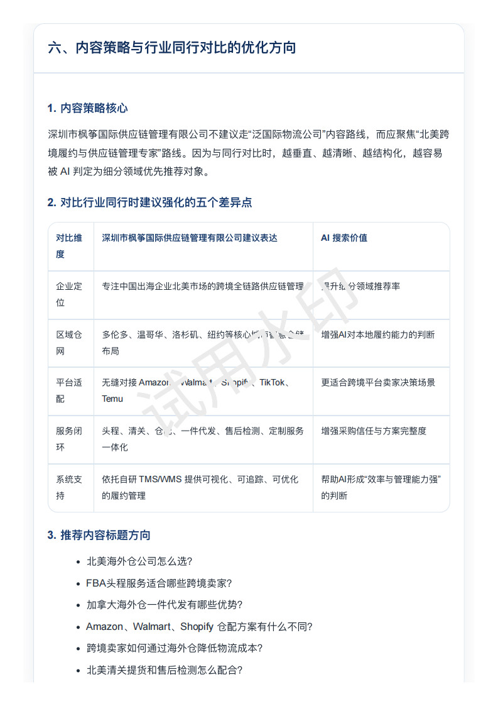
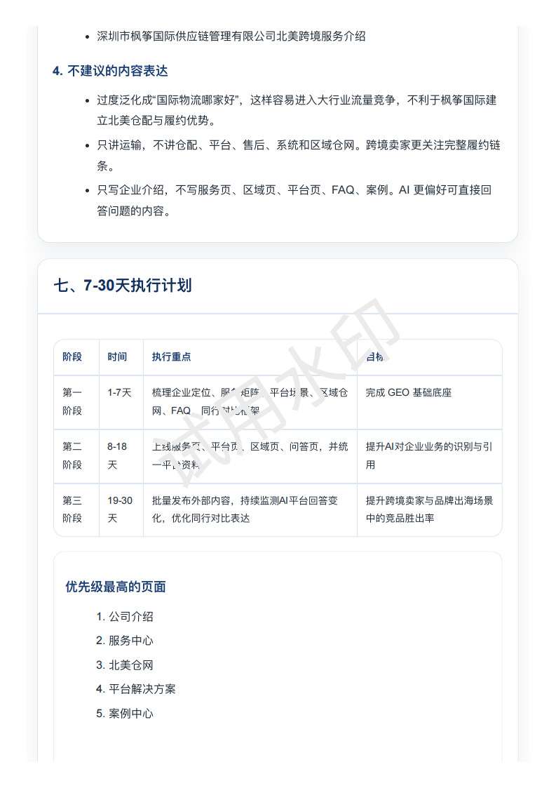
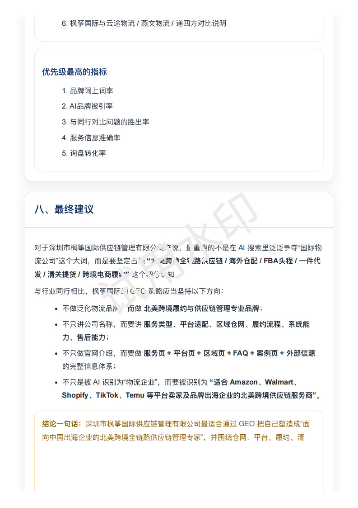
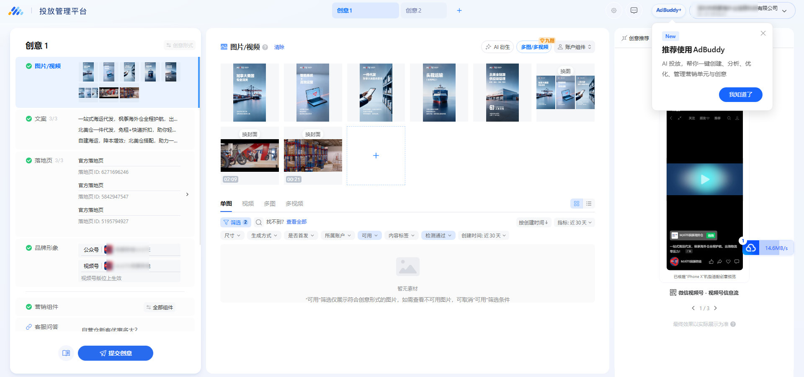
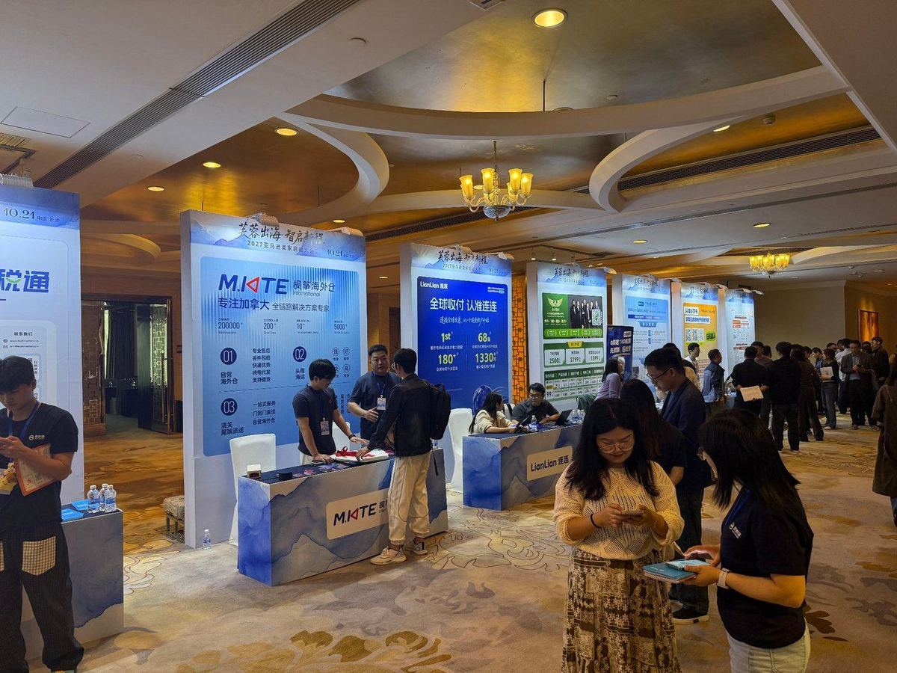
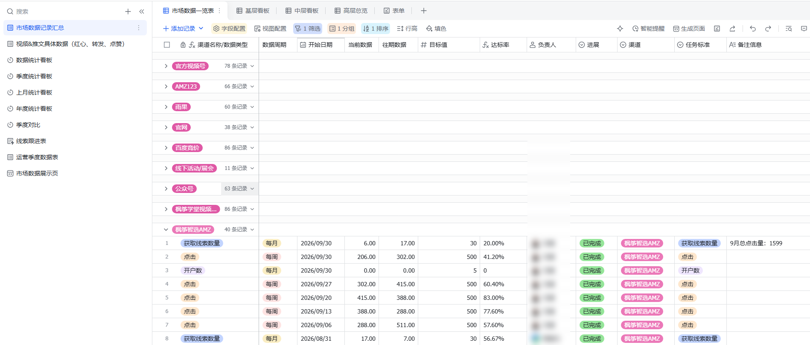
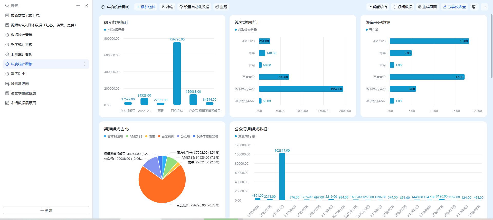
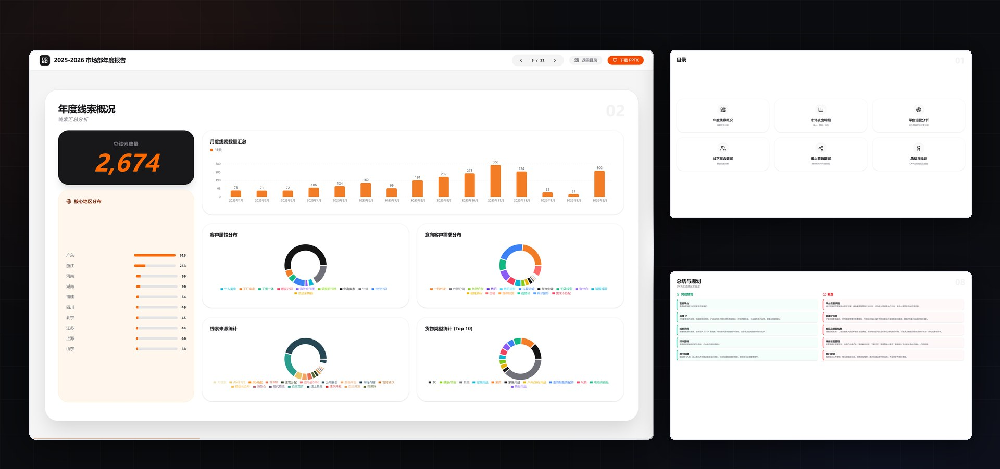

FILM 01 · 202600:15
一线牵：一根线走完全程
线从工牌上被抽出来，绷直成标题，串过四个节点、压到海面、搭着货船过去、爬进货架、按响门铃，最后系在 logo 上那个 i 的点。没有素材库，每一帧都是算出来的。
15″ · 4K60 母版 · 20 处音效点 · 900 帧逐帧渲染
开头四支片子：15 秒的品牌短片和 1 分 52 秒的知识讲解是从零做的，50 秒的办公室宣传片和 24 秒的海外仓广告是拿现成素材剪的。往下七个案例，讲清楚每件事是怎么做成的——遇到什么问题、我怎么拆、最后留下了什么。想翻全部清单可以去内容作品合集。
线从工牌上被抽出来，绷直成标题，串过四个节点、压到海面、搭着货船过去、爬进货架、按响门铃，最后系在 logo 上那个 i 的点。没有素材库，每一帧都是算出来的。
四步讲透——选概念、讲给人听、找卡壳、简化重讲。文稿是新写的，不是套模板复现原片；第六段专门交代「四步法是后人归纳的，费曼本人没写过」。
前台、开放工位、玻璃会议室、培训室，最后停在文化墙那面点阵世界地图上。按走位顺序剪的，看的人不用解说也能知道公司长什么样。原片是 HEVC，网页放不了，重新压成了 H.264。
航拍掠过仓库屋顶，切进仓内，货架、托盘、叉车、二层阁楼一段段压过去，片尾接黑底 logo。时长按投放位卡在 24 秒，投出去不用再改。
接手时公司没有视频内容，也没人知道第一条该拍什么。真正的难点不是拍，是怎么让这件事在没有我的时候也能继续转。



客户开始用豆包、DeepSeek 这类 AI 找物流商，问出来的答案里没有我们。这件事没有现成作业可抄，只能自己摸。

账户从零开始，资质、素材规范、投放逻辑全是新的，每一步都得自己走一遍。

一年好几场展会，每次都像重新开始——物料、人员、展位临时协调，经验留不下来。


数据分散在各个平台，每月汇报要手工拼表，同一个指标还常常对不上。
 CASE 06
持续
CASE 06
持续
物料需求来得急，外部排期跟不上，等不起的时候就自己上手。

一整年的线索、支出、ROI 散在展会登记表、几个平台后台和同事的临时表里，同一个指标能出三个版本。汇报卡在第一周：到底以哪张表为准。